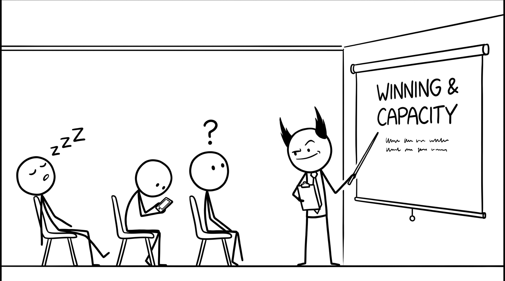

<section id="wtf" data-transition="fade" style="display:flex; align-items:center; justify-content:center; padding:0; background:#fcfcfa">

<p style="position:absolute;left:0;bottom:10px;width:1920px;margin:0;text-align:center;font-family:'Patrick Hand', 'Trebuchet MS', sans-serif;font-size:22px;color:#8a8f98">Copyright Dobromir Montauk 2026</p>
<aside><b>WTF?</b> Admit it: I wrote that slide and I’m not sure either. “Winning” and “capacity” are words we nod along to in meetings. By the end of this, you should be able to use them to make a decision on Monday.</aside>
</section>
